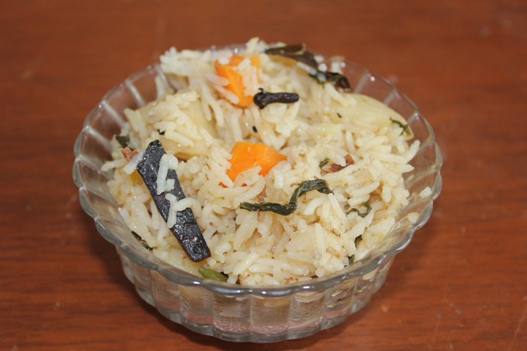

Indian Style Basmati Rice

Delicious Basmati Rice with Vegetable Pulav
Ingredients
- 1 1/2 cups basmati rice
- 2 tablespoons vegetable oil
- 1 (2 inch) piece cinnamon stick
- 2 pods green cardamom
- 2 whole cloves
- 1 tablespoon cumin seed
- 1 small onion,thinly sliced
- 2 1/2 cups water
- 1 teaspoon salt, or to taste
Steps
- Place rice into a bowl with enough water to cover.Set aside to soak for 20 minutes.
-
Meanwhile, in the last 10 minutes of soaking, heat oil in a large pot or saucepan over medium
heat. Add cinnamon stick, cardamom pods, and cloves, then stir in cumin seed. Cook and stir until
fragrant and toasted, about a minute, then add onion to the pot. Saute onion until the color is
a rich golden brown, about 10 minutes.
-
Drain water from rice, and stir into the pot. Cook and stir rice until lightly toasted,
about 3 minutes. Add water and salt, and bring to a boil. Cover and reduce heat to low.
-
Simmer for about 15 minutes, or until all the water has been absorbed. Let stand for 5 minutes,
then fluff with a fork before serving.